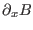
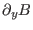
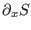
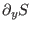
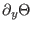
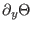
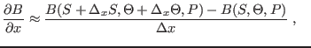
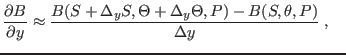
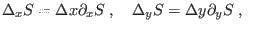
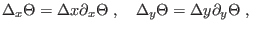

Next: The vertical friction Up: The mean flow model Previous: The external pressure-gradient Contents
INTERFACE:
subroutine intpressure(nlev)DESCRIPTION:
With the hydrostatic assumption
The first term on the right hand side
in (17)
and (18) is the external pressure-gradient
due to surface slopes, and the second the internal pressure-gradient
due to the density gradient.
The internal pressure-gradient will only be established by
gradients of mean potential temperature  and mean
salinity
and mean
salinity  . Sediment concentration is assumed to be
horizontally homogeneous.
. Sediment concentration is assumed to be
horizontally homogeneous.
In this subroutine, first, the horizontal buoyancy gradients,
 and
,
are calculated from the prescribed gradients of salinity,

and
, and temperature,
 and
,
according to the finite-difference expression
and
,
according to the finite-difference expression
|  | (19) |
|  | (20) |
|  | (21) |
|  | (22) |
The horizontal salinity and temperature gradients have to supplied by the user, either as constant values or as profiles given in a file (see obs.nml).
USES:
use meanflow, only: T,S use meanflow, only: gravity,rho_0,h use observations, only: dsdx,dsdy,dtdx,dtdy use observations, only: idpdx,idpdy,int_press_method use eqstate, only: eqstate1 IMPLICIT NONEINPUT PARAMETERS:
number of vertical layers integer, intent(in) :: nlevREVISION HISTORY:
Original author(s): Hans Burchard & Karsten Bolding